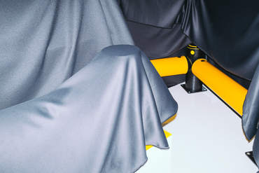

Mario Wezel é um fotógrafo freelance alemão que nasceu em 1988, em Nürtingen, Alemanha. Ele começou a trabalhar para o jornal local de sua cidade natal durante seus últimos anos de escola. Ele se mudou para Hannover em 2008, onde começou no programa de Fotojornalismo da Universidade de Ciências Aplicadas e art. Entre setembro de 2010 e fevereiro de 2011, ele internado no jornal regional Weser Kurier. Mario passou um ano na Dinamarca, onde ele participou no programa internacional de fotojornalismo na escola dinamarquesa de mídia e jornalismo. Ele é um membro fundador do recém-lançado "Mint Coletiva". Em sua obra Mario centra-se em temas sociais com os quais ele tenta refletir as normas e os valores em que vivemos.
A série mostra uma sensibilidade sem igual ao retratar a vida da menina no interior da Dinamarca e deixa o questionamento no ar: o que você escolheria? A ideia do projeto surgiu quando Wezel começou a se questionar sobre o que decidiria caso descobrisse que sua namorada estava esperando um bebê com trissomia do 21. Foi buscando casais que tinham passado por essa decisão que encontrou Martin e Karina e, após uma conversa, os pais permitiram que o fotógrafo registrasse o cotidiano íntimo da família e, mais especificamente, de Emmy.
|  |
Uma plataforma que liga melhores contadores de histórias do mundo para as empresas que têm uma história para contar